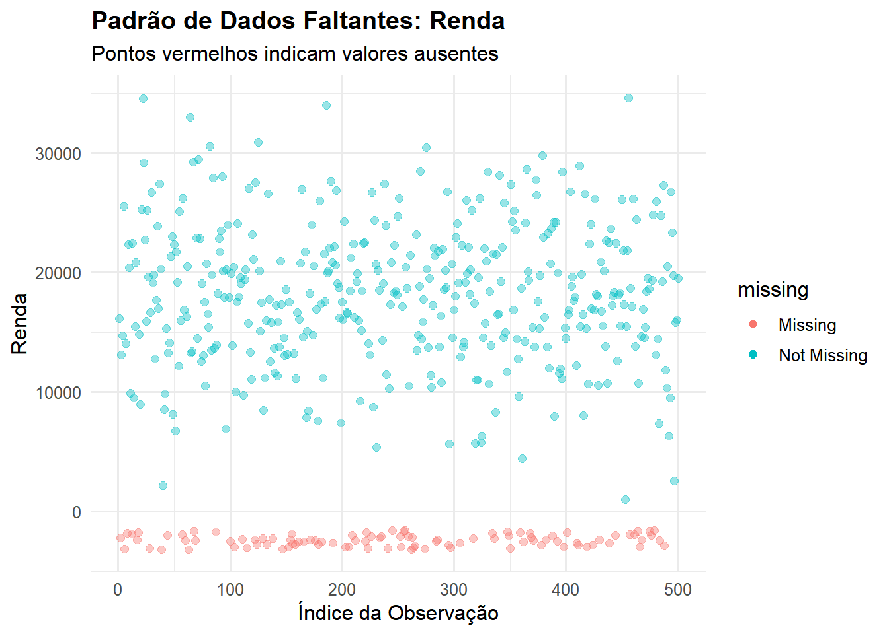
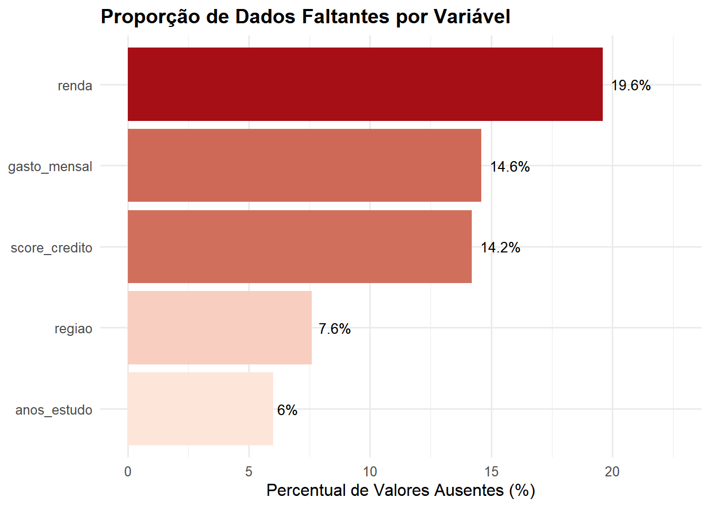
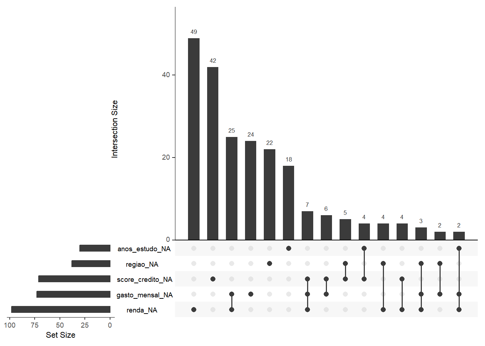

Vamos criar um dataset que simula dados reais com relações não-lineares entre variáveis.
n <-500# Número de observaçõesdados_completos <-tibble(# Variável idade (20 a 70 anos)idade =runif(n, 20, 70),# Renda depende da idade de forma não-linear (curva quadrática)renda =2000+500* idade -3* idade^2+rnorm(n, 0, 5000),# Anos de estudo (relacionado com idade e renda)anos_estudo =8+0.15* idade +0.0001* renda +rnorm(n, 0, 2),# Pontuação de crédito (depende de várias variáveis)score_credito =300+5* anos_estudo +0.01* renda +2* idade +rnorm(n, 0, 50),# Gasto mensal (interação complexa)gasto_mensal =500+0.3* renda -10* anos_estudo +0.05* score_credito +rnorm(n, 0, 1000),# Variável categórica: regiãoregiao =sample(c("Norte", "Sul", "Leste", "Oeste"), n, replace =TRUE)) |># Garantir valores positivos e limites realistasmutate(renda =pmax(renda, 1000),anos_estudo =pmax(pmin(anos_estudo, 20), 0),score_credito =pmax(pmin(score_credito, 850), 300),gasto_mensal =pmax(gasto_mensal, 0) )# Visualizar os dados completosglimpse(dados_completos)
PASSO 3: INTRODUZIR DADOS FALTANTES DE FORMA REALISTA
Criar cópia dos dados e introduzir missings usando MCAR (Missing Completely At Random) em algumas variáveis e MAR (Missing At Random) em outras - mais realista.
dados_com_missing <- dados_completos |>mutate(# 20% de missings em renda (MCAR)renda =if_else(runif(n) <0.20, NA_real_, renda),# Missings em anos_estudo dependem da idade (MAR)# Pessoas mais jovens tendem a não responderanos_estudo =if_else(idade <30&runif(n) <0.25, NA_real_, anos_estudo),# 15% de missings em score_credito (MCAR)score_credito =if_else(runif(n) <0.15, NA_real_, score_credito),# Missings em gasto_mensal relacionados com renda alta (MAR)gasto_mensal =if_else(renda >40000&runif(n) <0.30|runif(n) <0.10,NA_real_, gasto_mensal),# 10% de missings em regiãoregiao =if_else(runif(n) <0.10, NA_character_, regiao) )
PASSO 4: ANÁLISE EXPLORATÓRIA DOS DADOS FALTANTES
# Contar missings por variávelresumo_missing <- dados_com_missing |>summarise(across(everything(), ~sum(is.na(.)))) |>pivot_longer(everything(), names_to ="variavel", values_to ="n_missing") |>mutate(perc_missing =round(n_missing / n *100, 2),total_obs = n ) |>arrange(desc(n_missing))print(resumo_missing)
# Visualização 1: Padrão de dados faltantesvis_missing_1 <-ggplot(dados_com_missing, aes(x =1:nrow(dados_com_missing))) +geom_miss_point(aes(y = renda), alpha =0.4, size =2) +labs(title ="Padrão de Dados Faltantes: Renda",subtitle ="Pontos vermelhos indicam valores ausentes",x ="Índice da Observação",y ="Renda") +theme_minimal(base_size =12) +theme(plot.title =element_text(face ="bold"))# Visualização 2: Proporção de missings por variávelvis_missing_2 <- resumo_missing |>filter(n_missing >0) |>ggplot(aes(x =reorder(variavel, perc_missing), y = perc_missing,fill = perc_missing)) +geom_col() +geom_text(aes(label =paste0(perc_missing, "%")), hjust =-0.2, size =3.5) +coord_flip() +scale_fill_gradient(low ="#FEE5D9", high ="#A50F15") +labs(title ="Proporção de Dados Faltantes por Variável",x =NULL,y ="Percentual de Valores Ausentes (%)") +theme_minimal(base_size =12) +theme(legend.position ="none",plot.title =element_text(face ="bold")) +ylim(0, max(resumo_missing$perc_missing) *1.15)# Visualização 3: Matriz de padrões de missingsvis_missing_3 <-gg_miss_upset(dados_com_missing, nsets =6,nintersects =15)# Combinar visualizaçõesprint(vis_missing_1)

print(vis_missing_2)

print(vis_missing_3)

PASSO 5: IMPUTAÇÃO COM RANDOM FOREST
# Converter região para factor (necessário para missForest)dados_para_imputar <- dados_com_missing |>mutate(regiao =as.factor(regiao))
Para executar imputação com missForest estabeleço os seguintes parâmetros: - ntree: número de árvores na floresta
- mtry: número de variáveis testadas em cada divisão
- maxiter: máximo de iterações
- verbose: mostrar progresso
resultado_imputacao <-missForest(xmis =as.data.frame(dados_para_imputar),ntree =100, # 100 árvores para cada florestamtry =2, # Raiz quadrada do número de variáveismaxiter =10, # Máximo de 10 iteraçõesverbose =TRUE# Mostrar progresso)